HOME |
PAGE 1 |
... |
PAGE 3 |
PAGE 4 |
Victorious in their battle against the Great Holy Knights, the Seven Deadly Sins bring peace to the kingdom, but a new threat looms on the horizon.
| 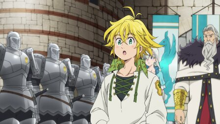 1.Revival of the Demon Clan:- As the kingdom begins to rebuild after the coup attempt, the king honors the Seven Deadly Sins for their bravery with a medal ceremony. |
2.Existence & Proof:- With Fraudrin's manipulation of Hendrickson, the Ten Commandments return to the physical realm. King follows Ban to the Fairy King's Forest |
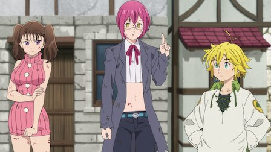 3.The Sacred Treasure Lostvayne:- Diane confronts Gowther after he manipulates Guila and Zeal's memories. With the return of the Demon Clan, new threats descend upon allied clans. |
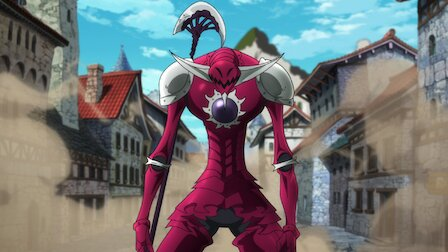 4.The Ten Commandments on the Move:- King struggles to fend off the giant Albion sent to destroy the Fairy King's Forest. Galand of the Ten Commandments appears before Meliodas. |
|
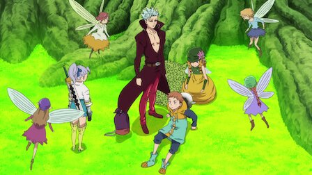 5.Overwhelming Violence:- The fairies reconcile their differences with King as Ban leaves the forest. Meanwhile, Meliodas and gang are overwhelmed by the sheer power of Galand. |
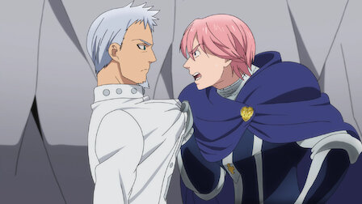 6.The Chief Holy Knight Atones For His Sins:- Hendrickson, thought to have been defeated in a battle against Meliodas, aids Gilthunder and the Holy Knights against a powerful Gray Demon. |
7.Where Memories Lead:- An injured Diane awakens, having trouble remembering her comrades. With her memories fading, she heads for Megadoza, home of the Giant Clan. |
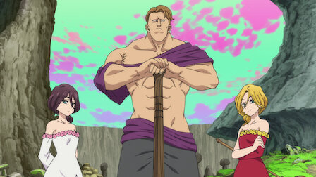 8.The Druids' Holy Land:- Meliodas and others head to Megadozer in hopes of finding Diane. Meanwhile, a confused Diane encounters Galand of the Ten Commandments once again. |
|
9.A Promise To A Loved One:- Acknowledging his lack of strength to face the Ten Commandments, Meliodas vigorously trains with the Druids of Istar to regain his sealed powers back. |
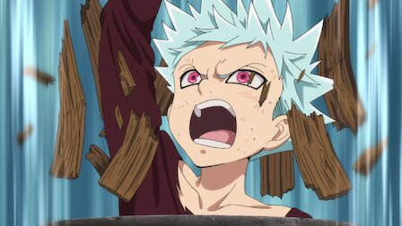 10.What We Lacked:- Ban reflects on his past after returning to his childhood home in Ravens. Meliodas's allies train for their inevitable war with the Ten Commandments. |
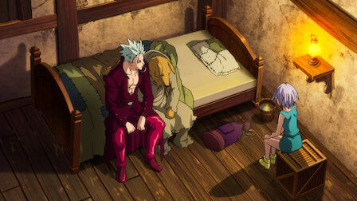 11.Father & Son:- A frail Zhivago reunites with Ban, his long-lost adopted son. Meanwhile, a wary King confronts Meliodas about his true intentions. |
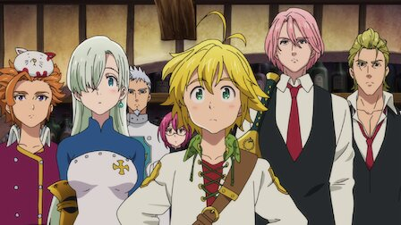 12.Where Love Is Found:- After a brief encounter with Meliodas, the Ten Commandments begin their attack on Britannia. A resurrected Elaine appears before Ban. |
|
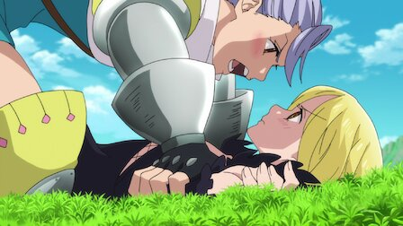 13.Farewell, Beloved Thief:- A revived but possessed Elaine attacks her lover, Ban, as Melascula and Galand of the Ten Commandments emerge to destroy those in their path. |
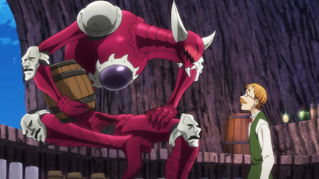 14.Master of the Sun:- Jericho carries severely injured Ban and Elaine on her back while escaping from Galand and Melascula before stumbling into a bar deep inside a cave. |
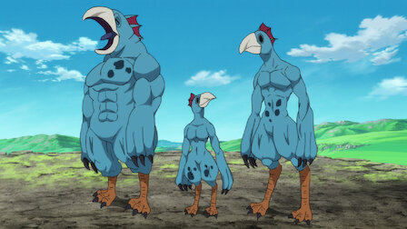 15.A Bloodcurdling Confession:- Gloxinia and Drole of the Ten Commandments lure strong fighters to Vaizel by offering to grant any wish to the winner of their Great Fight Festival. |
16. Death-Trap Maze:- An elaborate trap-laden deadly maze constructed by Drole begins to weed out the weaker challengers that have gathered for the Great Fight Festival. |
|
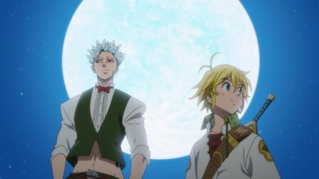 17.Legendary Figures:- The surviving challengers of the Great Fight Festival are split into pairs and made to face each other in a tag team battle. |
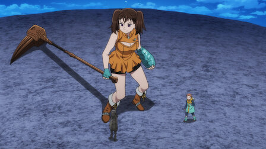 18.For Whom Does That Light Shine?:- King and Diane continue their battle against opponents summoned by Gloxinia and Drole. Escanor refuses to fight against his fellow ally Gowther. |
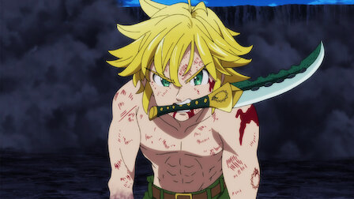 19. Meliodas vs.The Ten Commandments:- As Escanor's battle with Gowther comes to a dramatic end, Meliodas must now face the remaining Ten Commandments in an all-out battle. |
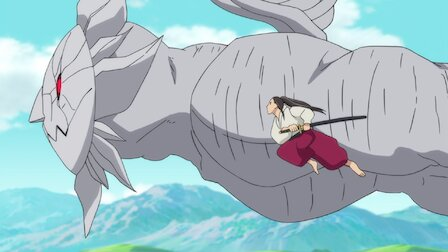 20.Have Hope:- With Meliodas rendered powerless, Ban asks to be transported back so he can aid him in his fight against Estarossa and the other Ten Commandments. |
|
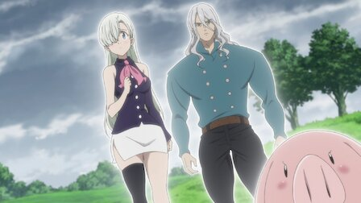 21.Certain Warmth:- While caring for Meliodas, Elizabeth encounters a former Great Holy Knight thought to have perished long ago by the hands of Dreyfus and Hendrickson. |
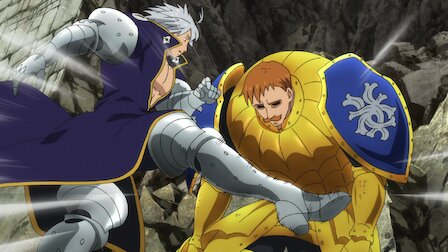 22.Return of the Sins:- With Ban and the Holy Knights paralyzed by Estarossa’s powers, Escanor shows up to thwart the fall of Liones at the hands of the Ten Commandments. |
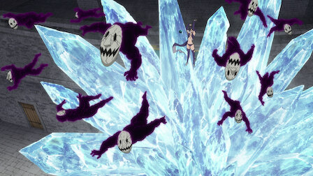 23.The Hero Rises!!:- As the situation inside Liones Castle becomes even more dire, Merlin, freed from Galand's Commandment of Truth, reappears in her former form. |
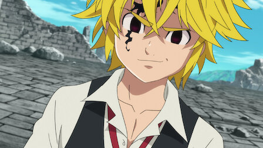 24.So Long As You're Here:- Determined to kill his former leader for betraying their clan 3,000 years ago, Fraudrin takes on a newly resurrected darker, more powerful Meliodas |
HOME |
PAGE 1 |
... |
PAGE 3 |
PAGE 4 |